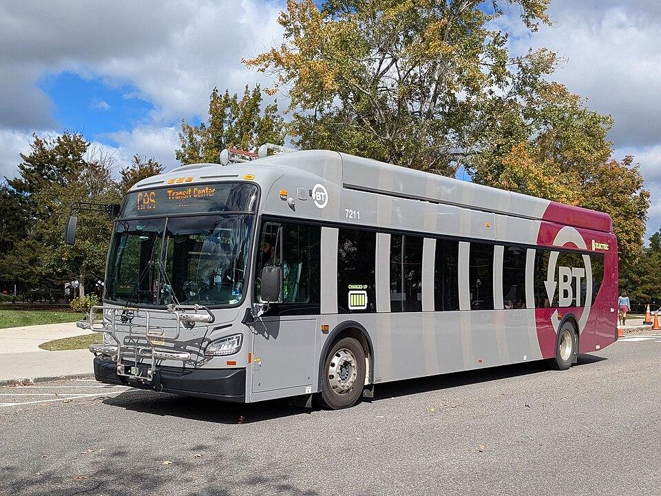

The Smart Campus Transportation System is designed for people who travel to or around Virginia Tech, as well as staff responsible for managing campus transportation and parking. Students, faculty, staff, and visitors would primarily use the system to check bus arrival times, view routes, and find available parking. Transit and parking operators would use a separate dashboard to monitor conditions and manage service information. System administrators would manage supporting information such as schedules and system settings. The following use cases describe common situations in which different users would interact with the proposed system.
UC-1: Finding Available Parking
A student who drives to Virginia Tech needs to find parking before attending class. The student usually parks in a particular campus lot, but it is often crowded during busy hours. Without knowing whether spaces are available, the student may arrive at a full lot and need to spend additional time searching elsewhere. Before leaving for campus, the student opens the Smart Campus Transportation System and checks parking availability. The system displays the number of open spaces, current availability status, and time of the latest update for each parking lot. The student can also filter lots based on their parking permit type to avoid selecting a location where they are not allowed to park.
After comparing the available options, the student chooses a lot with open spaces that allows their permit type. If a parking sensor stops reporting or provides invalid information, the system marks the live count as unavailable and displays an estimated status instead. This allows the student to make a more informed decision without assuming that outdated information is accurate.
UC-2: Tracking a Bus or Shuttle
A student who lives off campus regularly takes the bus to Virginia Tech. The student needs to arrive at class on time but has experienced situations where a bus arrives later than expected. Relying only on the published schedule makes it difficult to decide when to leave for the bus stop.
The student opens the Smart Campus Transportation System and selects a nearby bus stop. The system displays the routes serving that stop and the next three arrival times for each route. The student can also view current bus and shuttle locations on a map, along with their routes and the times of their latest location updates. Using the estimated arrival times, the student decides when to leave for the stop. As new vehicle information becomes available, the system updates the arrival estimates to reflect current conditions.
If a vehicle stops reporting its location for more than 90 seconds, the system marks its information as delayed. After five minutes without an update, the outdated vehicle location is removed from the map, and scheduled arrival times are shown instead. This helps the student understand whether the displayed information is based on live data or the published schedule.


UC-3: Monitoring Bus Delays and Service Disruptions
A Blacksburg Transit operator is responsible for monitoring buses and shuttles serving the Virginia Tech campus. During busy periods, traffic congestion or unexpected problems may cause vehicles to fall behind schedule. The operator needs to identify these problems and communicate important changes to riders.
The operator signs in to the Smart Campus Transportation System and opens the operator dashboard. The dashboard displays the current status of vehicles in service, including how early or late they are compared with their schedules. Vehicles that are significantly delayed, off route, or no longer reporting their locations are flagged for attention.
The operator notices that a bus is running more than five minutes late and investigates the situation. If the disruption affects passengers, the operator can create a service alert through the dashboard. The system displays the alert to riders viewing the affected route or stop. When the disruption ends, the operator can close the alert so that riders no longer see it as active. This allows the operator to monitor transportation conditions and communicate service changes more effectively.
UC-4: Managing Parking Conditions
A Virginia Tech parking operator is responsible for monitoring parking availability across campus. During busy periods, several parking lots may approach capacity, while others may experience sensor problems or temporary closures. The operator needs accurate information to understand which lots are available and where adjustments may be necessary.
The operator signs in to the Smart Campus Transportation System and opens the parking section of the operator dashboard. The system displays the number of available spaces and the current status of each campus parking lot. It also identifies counting devices that are delayed, unavailable, or reporting invalid data. The operator notices that the reported count for one lot does not match its actual occupancy. After confirming the correct count, the operator manually adjusts the information through the dashboard. The system then updates the displayed parking availability.
If a parking lot needs to close for an event or another reason, the operator can mark it as closed. The rider app reflects this change so that commuters can avoid the unavailable lot. When the lot becomes available again, the operator can reopen it through the dashboard.
UC-5: Updating Route and Schedule Information
A system administrator is responsible for keeping transportation information accurate and up to date. When Blacksburg Transit changes its routes or schedules, the administrator needs to make sure the Smart Campus Transportation System reflects those changes.
The administrator signs in to the system and accesses the schedule management functions. After receiving an updated schedule from Blacksburg Transit, the administrator loads the new schedule and specifies when it should take effect. Once the new schedule becomes active, the system uses the updated route and timetable information when displaying routes, stops, and arrival times. This allows riders to access current schedule information without relying on outdated routes or departure times.